4 Resultaten
4.1 Abiotiek
4.1.1 Waterdiepte
Voor de controlesectie werd vastgesteld dat de waterdiepte beduidend hoger was in 2019 dan in 2016 en 2024 (Fig. 4.1 en Fig. 4.2). Dit kan het gevolg zijn van een grotere hoeveelheid water die op dat moment net beschikbaar was in de beek (Fig. 4.3) maar dit kan ook gerelateerd zijn aan de relatief grote aantallen waterplanten in 2019 (Fig. 4.21). Waterplanten hebben een bufferende werking op waterstanden door het behoud van een hoger waterniveau en een tragere afvoer.
Waterdiepte stijgt doorheen de tijd voor Schurfert en Bocht van Laren (Fig. 4.1 en Fig. 4.2). Voor de controle sectie daalt de waterdiepte in 2024 ten opzichte van 2019. Of dit het gevolg is van de hogere waterhoeveelheid die het systeem binnenkomt in 2019 en 2024 ten opzichte van 2016 of omwille van hogere plantendichtheid en of de hermeandering zelf is niet duidelijk.
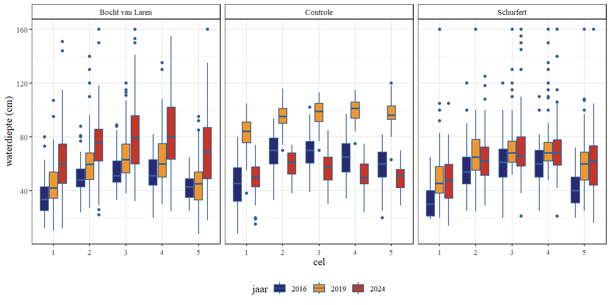
Figuur 4.1: Boxplots van de waterdiepte per cel. Een onderscheid wordt gemaakt tussen de secties en jaren.
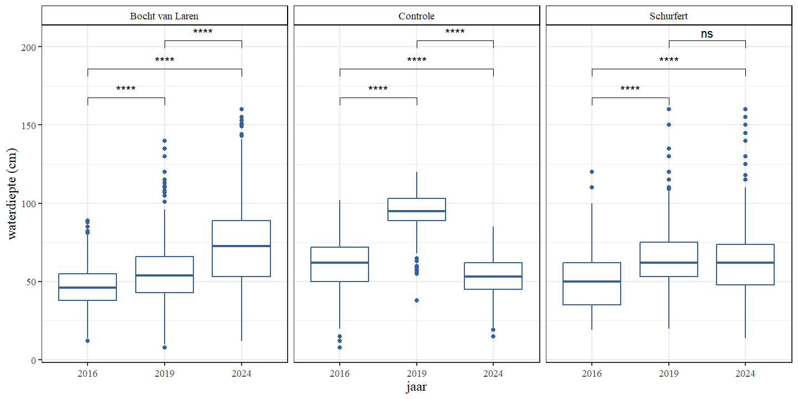
Figuur 4.2: Boxplots van de waterdiepte per jaar. Een onderscheid wordt gemaakt tussen de secties.
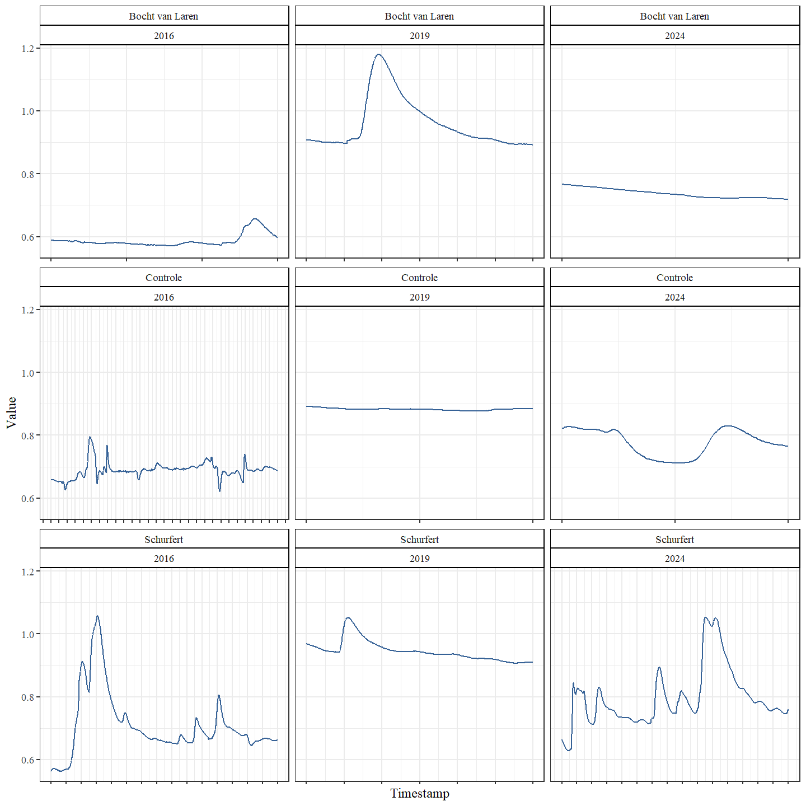
Figuur 4.3: Waterstand (meters) thv station 12122 (50.99581; 5.147759)) dat zich bevindt tussen de secties Schurfert en Controle. Voor elk traject en elk jaar wordt de volledige periode weergegeven waarbinnen het veldwerk plaatsvond. Elk streepje op de x-as komt overeen met één dag. Er is een zeer grote variabiliteit in de duur van de studieperiode per jaar en per secties.
| jaar | sectie | start | stop |
|---|---|---|---|
| 2016 | Bocht van Laren | 2016-07-26 | 2016-07-29 |
| 2016 | Controle | 2016-08-17 | 2016-09-14 |
| 2016 | Schurfert | 2016-08-01 | 2016-08-16 |
| 2019 | Bocht van Laren | 2019-08-28 | 2019-09-03 |
| 2019 | Controle | 2019-09-03 | 2019-09-05 |
| 2019 | Schurfert | 2019-08-22 | 2019-08-28 |
| 2024 | Bocht van Laren | 2024-09-18 | 2024-09-19 |
| 2024 | Controle | 2024-09-03 | 2024-09-05 |
| 2024 | Schurfert | 2024-09-02 | 2024-09-17 |
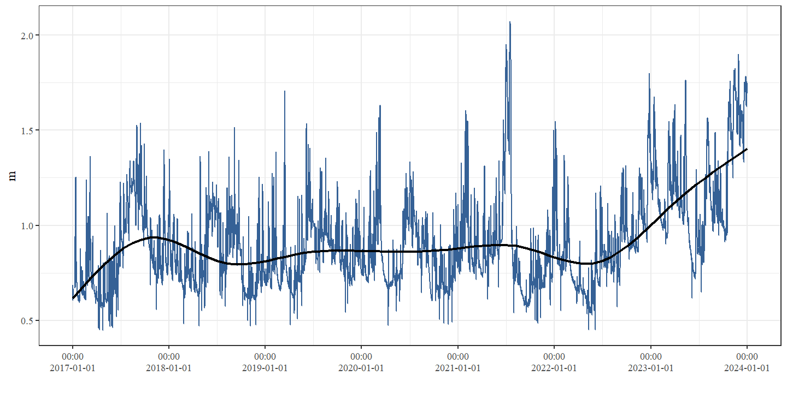
Figuur 4.4: Waterpeil (m) thv station 12122 (50.99581; 5.147759)) dat zich bevindt tussen de secties Schurfert en Controle.
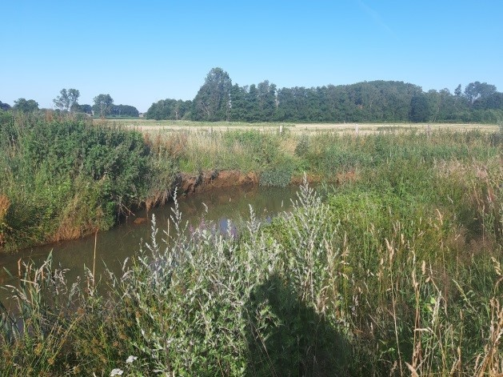
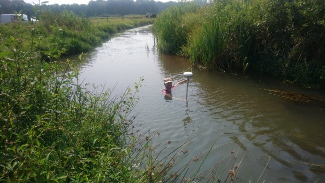
Figuur 4.5: Diepe buitenbocht met afkalvende oever van een meander in traject 3 van sectie Bocht van Laren (links) en diepe (>1,7 m) niet te doorwaden bocht (rechts) tijdens de 2019 habitatopmeting (Foto’s David Buysse).
4.1.2 Bodemhoogte
In tegenstelling tot de waterdiepte kan de bodemhoogte (i.e. hoogteligging van de bodem tov referentie) een beter inzicht geven in veranderingen van de morfologie omdat het variabele waterniveau buiten beschouwing wordt gelaten. De bodemhoogte van de controle en Schurfert tonen een duidelijke stijging van de gemiddelde bodemhoogte in 2019 ten opzichte van 2016 en in alle secties zien we een daling in gemiddelde bodemhoogte van 2019 naar 2024 (Fig. 4.6 en Fig. 4.7). De gemiddelde bodemhoogte in 2024 daalt zelfs zo sterk dat deze lager is dan de gemiddelde bodemhoogte van 2016.
Wanneer een onderscheid wordt gemaakt op basis van het bochttype (binnen, buiten of geen bocht) van een traject zien we voor de hermeanderde delen geen duidelijk verschil tussen buiten of binnenbocht (Fig. 4.8 en Fig. 4.9). Dit is wellicht het gevolg van delen van het traject voor en na de eigenlijke bocht die weinig verschillen in bodemdiepte en mogelijke verschillen tussen binnen en buitenbocht uitmiddelen.
Wanneer we met behulp van een variogram de ruimtelijke variabiliteit bekijken van de bodemhoogte, zien we hoe deze toeneemt in 2019 ten opzichte van 2016 voor Schurfert en Bocht van Laren (Fig. 4.10). In de controle sectie neemt de ruimtelijke variabiliteit echter af doorheen de tijd, wat suggereert dat de bodemhoogte homogeniseert of op zijn minst constant blijft. De transversale variabiliteit stijgt het sterkst voor de Bocht van Laren van 2016 naar 2019. De transversale variabiliteit stijgt ook voor Schurfert tijdens deze periode maar minder uitgesproken. Voor beide secties verplaatsen de pieken in ruimtelijke variabiliteit zich naar grotere afstanden van 2019 (5 tot 10 meter) naar 2024 (7.5 tot 13 meter). Dit suggereert dat de afwisseling tussen poelen en ondiepe stukken zich voordoet over almaar grotere afstanden, wat waarschijnlijk het gevolg is van de morfologische ontwikkelingen.
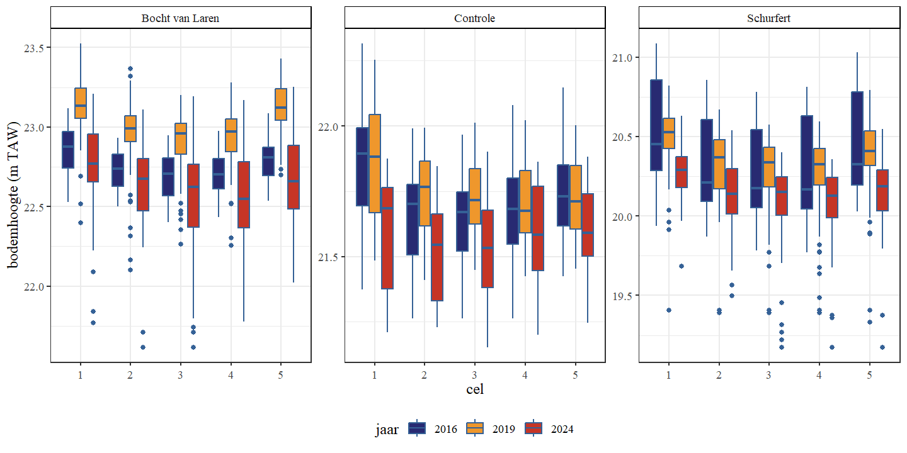
Figuur 4.6: Boxplots van de bodemhoogte per cel. Een onderscheid wordt gemaakt tussen de secties en jaren.
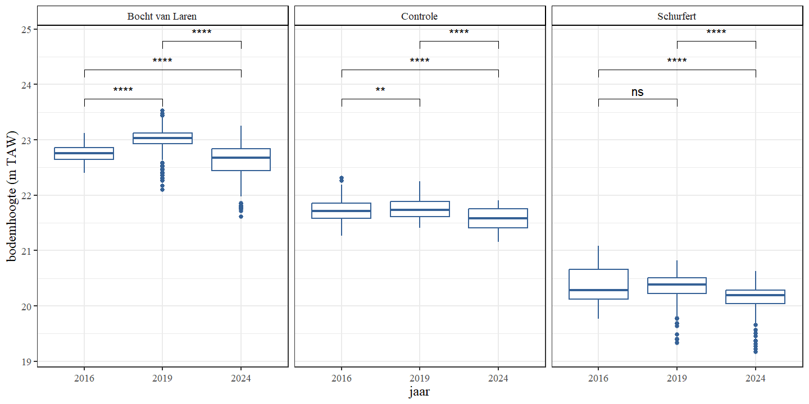
Figuur 4.7: Boxplots van de bodemhoogte per jaar Een onderscheid wordt gemaakt tussen de secties.
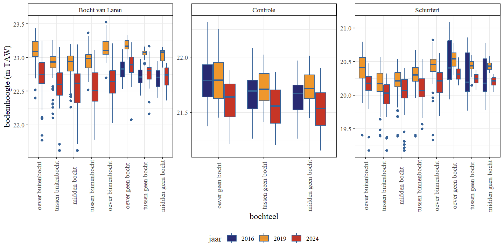
Figuur 4.8: Boxplots van de bodemhoogte per bochttype. Een onderscheid wordt gemaakt tussen de secties en jaren.
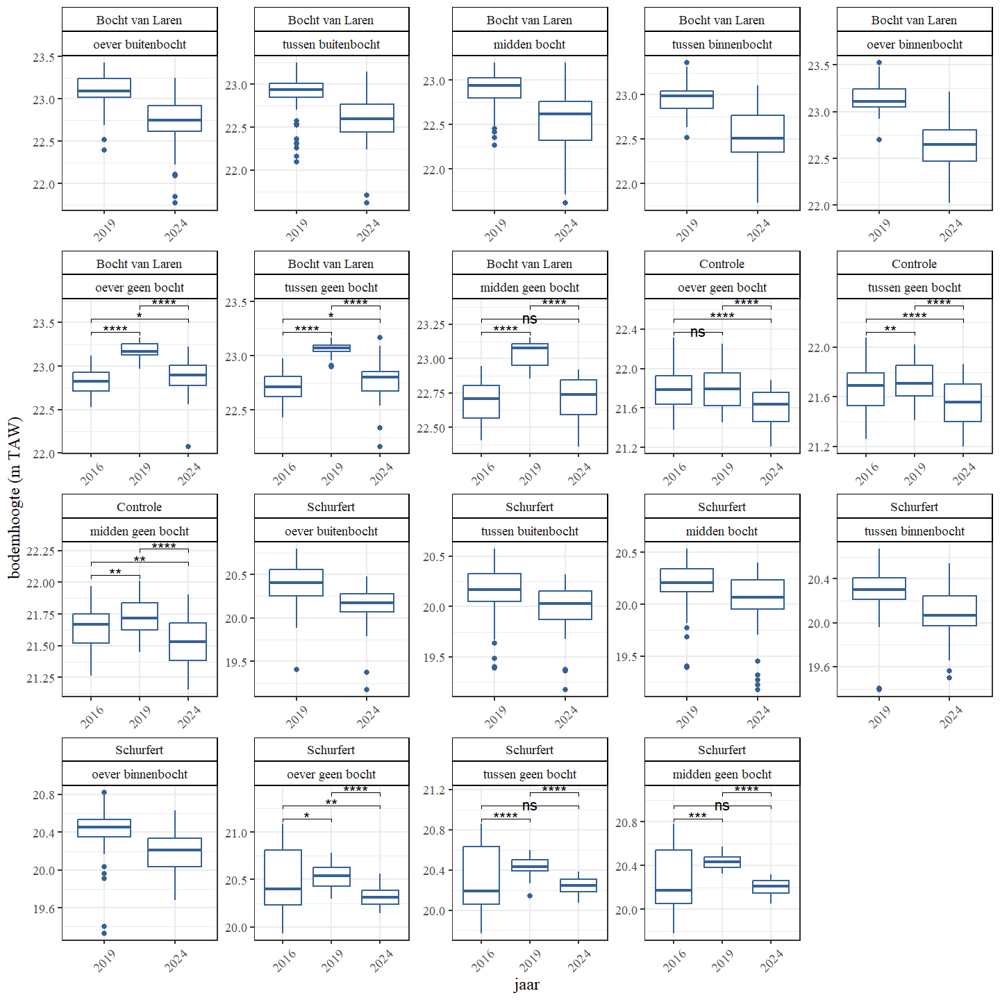
Figuur 4.9: Boxplots van de bodemhoogte per jaar Een onderscheid wordt gemaakt tussen de secties en bochttypes.
![Variogram van de bodemhoogte. Een variogram is een grafiek die wordt gebruikt in de geostatistiek om ruimtelijke variabiliteit te analyseren. Het beschrijft hoe de variabiliteit (of spreiding) tussen waarnemingen verandert naarmate de afstand (x-as: uitgedrukt in meters) tussen de waarnemingen groter wordt. Een onderscheid wordt gemaakt tussen de secties en jaren. De richtingen in de ruimte (dir.hor) die werden onderzocht waren: in de lengterichting (0 graden), loodrecht op de lengterichting (90 graden) en schuin op de lengterichting (45 graden).](zwarte_beek_rapport_files/figure-html/variogrambodemhoogte-1.png)
Figuur 4.10: Variogram van de bodemhoogte. Een variogram is een grafiek die wordt gebruikt in de geostatistiek om ruimtelijke variabiliteit te analyseren. Het beschrijft hoe de variabiliteit (of spreiding) tussen waarnemingen verandert naarmate de afstand (x-as: uitgedrukt in meters) tussen de waarnemingen groter wordt. Een onderscheid wordt gemaakt tussen de secties en jaren. De richtingen in de ruimte (dir.hor) die werden onderzocht waren: in de lengterichting (0 graden), loodrecht op de lengterichting (90 graden) en schuin op de lengterichting (45 graden).
4.1.3 Stroomsnelheid
De gemiddelde stroomsnelheid was voor alle secties laagst in 2019 en hoogst in 2024 (Fig. 4.11 en Fig. 4.12). Dit is grotendeels tegengesteld aan de observaties van de diepte, wat te verwachten is. Doordat dieper water een groter volume heeft wordt de stroming meer verspreid over de diepte. Bovendien neemt de weerstand van de bodem toe naarmate de diepte toeneemt, wat leidt tot lagere snelheden. Een gelijkaardig tegengesteld patroon zien we ook in de meetreeks van de VMM (Fig. 4.15). De gemiddelde stroomsnelheid was hoogst voor alle secties in 2024, maar het verschil tussen 2019 en 2024 was het meest uitgesproken voor de controle-sectie.
Stroomsnelheid was typisch laagst langs de oevers en hoogst in het midden van de waterloop, en dit verschil bleek meest uitgesproken bij hogere gemiddelde stroomsnelheden (Fig. 4.13). In tegenstelling tot de stijgende ruimtelijke variabiliteit van de bodemhoogte van 2016 naar 2019, zien we voor de ruimtelijke variabiliteit van de stroomsnelheid een daling in deze periode (Fig. 4.14). Dit zowel voor de transversale als de longitudinale variabiliteit De ruimtelijke variabiliteit stijgt echter in 2024 opnieuw tot boven de ruimtelijke variabiliteit van 2016.
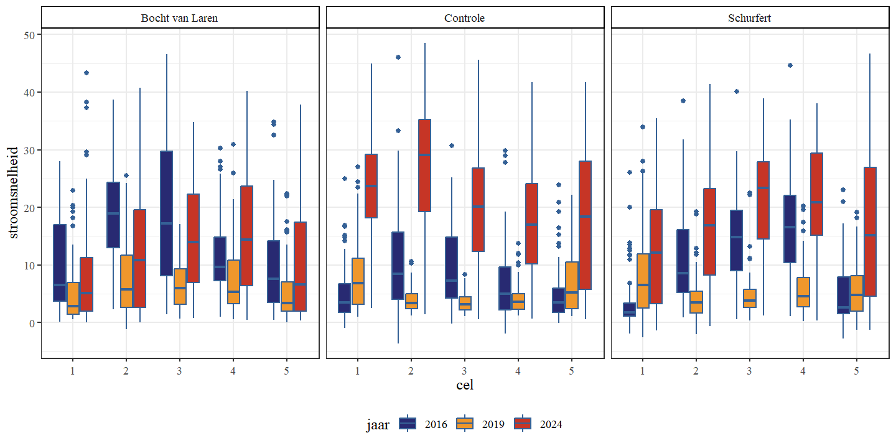
Figuur 4.11: Boxplots van de stroomsnelheid (m/s) per cel. Een onderscheid wordt gemaakt tussen de secties en jaren
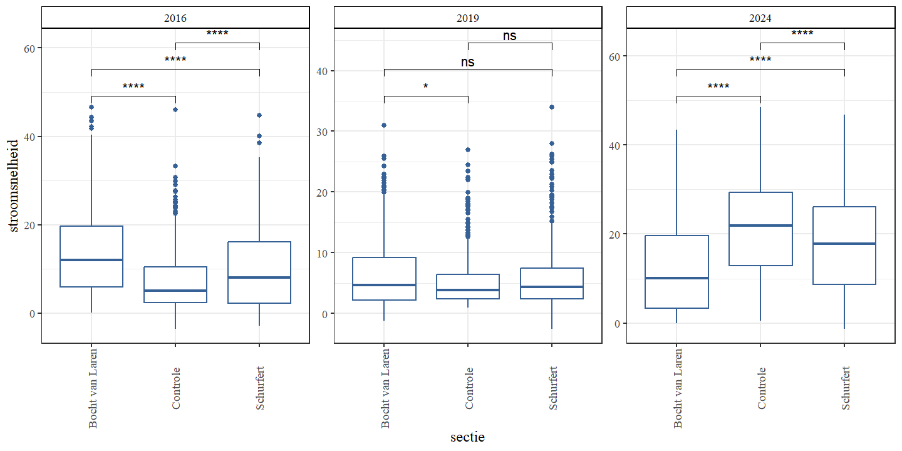
Figuur 4.12: Boxplots van de stroomsnelheid (m/s) per sectie. Een onderscheid wordt gemaakt tussen de jaren
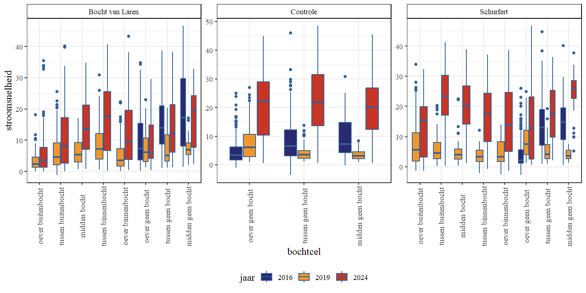
Figuur 4.13: Boxplots van de stroomsnelheid (m/s) per bochttype. Een onderscheid wordt gemaakt tussen de secties en jaren
![Variogram van de stroomsnelheid. Een variogram is een grafiek die wordt gebruikt in de geostatistiek om ruimtelijke variabiliteit te analyseren. Het beschrijft hoe de variabiliteit (of spreiding) tussen waarnemingen verandert naarmate de afstand (x-as: uitgedrukt in meters) tussen de waarnemingen groter wordt. Een onderscheid wordt gemaakt tussen de secties en jaren. De richtingen in de ruimte (dir.hor) die werden onderzocht waren: in de lengterichting (0 graden), loodrecht op de lengterichting (90 graden) en schuin op de lengterichting (45 graden).](zwarte_beek_rapport_files/figure-html/variogramstroomsnelheid-1.png)
Figuur 4.14: Variogram van de stroomsnelheid. Een variogram is een grafiek die wordt gebruikt in de geostatistiek om ruimtelijke variabiliteit te analyseren. Het beschrijft hoe de variabiliteit (of spreiding) tussen waarnemingen verandert naarmate de afstand (x-as: uitgedrukt in meters) tussen de waarnemingen groter wordt. Een onderscheid wordt gemaakt tussen de secties en jaren. De richtingen in de ruimte (dir.hor) die werden onderzocht waren: in de lengterichting (0 graden), loodrecht op de lengterichting (90 graden) en schuin op de lengterichting (45 graden).
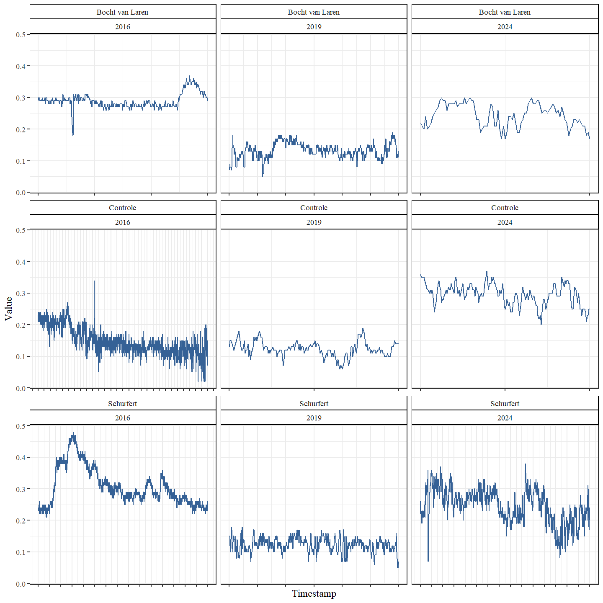
Figuur 4.15: Stroomsnelheid (m/s) thv station 12122 (50.99581; 5.147759)) dat zich bevindt tussen de secties Schurfert en Controle. Voor elk traject en elk jaar wordt de volledige periode weergegeven waarbinnen het veldwerk plaatsvond. Elk streepje op de x-as komt overeen met één dag. Er is een zeer grote variabiliteit in de duur van de studieperiode per jaar en per secties.
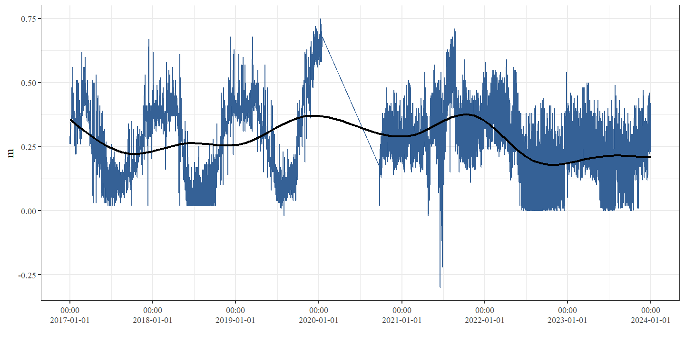
Figuur 4.16: Stroomsnelheid (m/s) thv station 12122 (50.99581; 5.147759)) dat zich bevindt tussen de secties Schurfert en Controle.
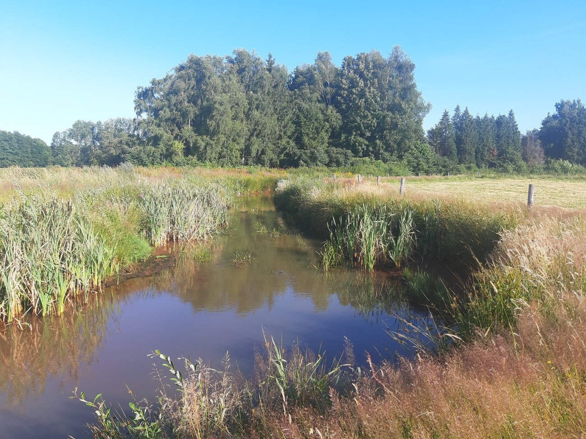
Figuur 4.17: Verbreding in traject 4 van sectie Bocht van Laren met lage stroomsnelheden in de ondiepe oeverzone (Foto’s David Buysse).
4.1.4 Substraat
De substraatdiversiteit is afgenomen voor de Bocht van Laren doorheen de tijd (Tabel 4.2). Voor Schurfert is deze nagenoeg constant gebleven met een lichte stijging in 2019 en een terugkeer naar dezelfde waarde van 2016 in 2024. In de controle-sectie is deze sterk toegenomen van 2016 naar 2019, maar dan weer gezakt van 2019 naar 2024. De afname in de Bocht van Laren is het gevolg van de sterke afname aan slib, wat eigenlijk een positieve evolutie is aangezien slib voor hinder kan zorgen voor de ontwikkeling van levensgemeenschappen (Fig. 4.18). De plotse stijging in Schurfert in 2019 lijkt dan weer het gevolg van een relatief grote hoeveelheid aan organisch materiaal, dat in 2024 alweer sterk verminderd is. Zowel ter hoogte van Schurfert als de Bocht van Laren observeren we doorheen de tijd meer zandige point-bars. In de Bocht van Laren werd er significant meer steen (diameter > 32 mm) geobserveerd in 2019 dan in de andere jaren. In Schurfert werd er significant meer fijn grind (diameter tussen twee en acht mm) geobserveerd in 2024 dan in de andere jaren.
| sectie | 2016 | 2019 | 2024 |
|---|---|---|---|
| Bocht van Laren | 0.69 | 0.50 | 0.33 |
| Controle | 0.00 | 0.69 | 0.50 |
| Schurfert | 0.50 | 0.67 | 0.50 |
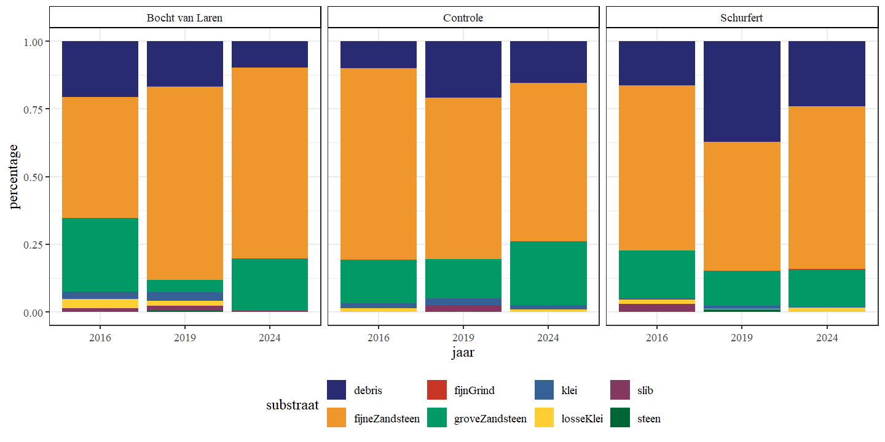
Figuur 4.18: Gemiddelde substraatsamenstelling voor elk sectie.
4.1.5 Waterkwaliteit
Waterkwaliteit werd niet bepaald tijdens de staalname in het studiegebied. Data van het dichtstbijzijnde stroomopwaartse en dichtstbijzijnde stroomafwaartse station werd geanalyseerd. Er is één maandelijks meetpunt stroomafwaarts (418200) en 1 maandelijks meetpunt stroomopwaarts (419600) dat gebruikt kan worden. De andere meetpunten in de Zwarte Beek zijn infrequent (1 tot 2 maal per jaar voor beperkt aantal variabelen) en sporadisch gemeten, maar liggen wel in Schurfert (418900) en Bocht van Laren (419400 en 419450).
Voor zowel het stroomopwaartse als stroomafwaartse station werd een stijging geobserveerd van CaO, DOC, hardheid en pH en een daling van ammonium, totale fosfor en zwevende stof (Fig. 4.19). Verder zien we stroomopwaarts een daling van Kjeldahl stikstof. Stroomafwaarts observeren we een stijging van nitraat en nitriet.
CaO, hardheid, zuurstofconcentratie, totale fosfor, temperatuur en zwevende stof waren hoger stroomopwaarts dan stroomafwaarts (Fig. 4.19). DOC, EC, totale stikstof, nitriet, nitraat, orthofosfaat en pH waren hoger stroomafwaarts dan stroomopwaarts. Kjeldahl stikstof en ammonium waren nagenoeg gelijk stroomafwaarts en stroomopwaarts.
Wanneer we specifiek kijken naar de concentraties van totale stikstof, nitriet en nitraat, dan zien we voor de herstellingswerken dat het verschil tussen stroomafwaarts en stroomopwaarts groter wordt. Na de herstellingswerken zien we geen verbetering (i.e. kleiner verschil) maar ook geen verslechtering (i.e.groter verschil). De ammoniumconcentratie was voor de herstellingswerken stroomafwaarts hoger dan stroomopwaarts, maar de verbetering was al ingezet voor de herstellingswerken. Na de herstellingswerken zijn de concentraties nagenoeg gelijk. De aanvankelijk veel hogere totale fosforconentratie stroomopwaarts begint na de herstellingswerken veel sterker te dalen dan de stroomafwaartse concentratie; De stroomopwaartse concentratie benadert tegen 2019 de stroomafwaartse en vanaf dan blijft het verschil min of meer constant. Voor orthofosfaat blijft het verschil tussen stroomopwaarts en stroomafwaarts constant zowel voor als na de herstellingswerken.
| NH4+ | Ammonium | mgN/L |
| BZV5 | Biochemisch zuurstofverbruik na 5d. | mgO2/L |
| P t | Fosfor, totaal | mgP/L |
| EC 20 | Geleidbaarheid (20°C) | µS/cm |
| KjN | Kjeldahlstikstof | - |
| NO3- | Nitraat | °C |
| NO2- | Nitriet | mg/L |
| oPO4 | Orthofosfaat, gefiltreerd | µg/L |
| pH | pH | °F |
| N t | Stikstof, totaal | mgC/L |
| T | Temperatuur | mgN/L |
| O2 | Zuurstof, opgeloste | mgO2/L |
| ZS | Zwevende stoffen | mgP/L |
| Ca o | Calcium, opgelost | µS/cm |
| H t | Hardheid, totaal | - |
| DOC | Organische koolstof, opgelost | °C |
| NH4+ | Orthofosfaat | mg/L |
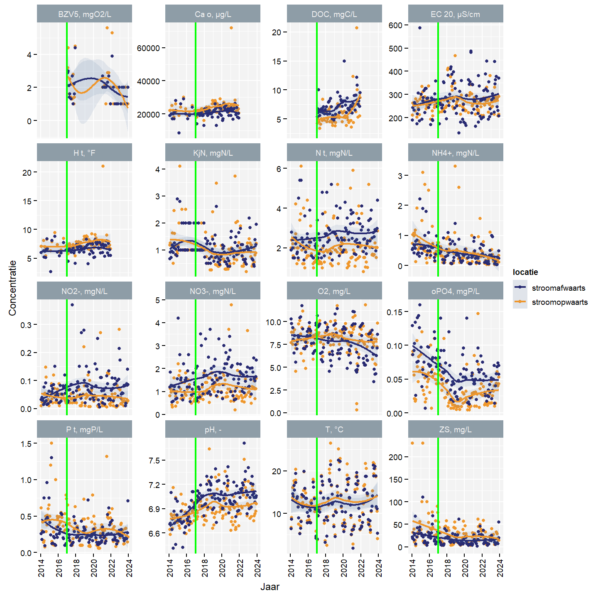
Figuur 4.19: Waterkwaliteit voor het meetstation stroomafwaarts van het studiegebied. De groene lijn geeft het einde van de herstelwerken aan.
4.2 Biotiek
4.2.1 Waterplanten
De gemiddelde bedekking door waterplanten was in elke sectie het hoogst in 2019 (Fig. 4.20 en Fig. 4.21). In de bocht van Laren en de controle werd de laagste bedekking geobserveerd in 2024, terwijl dit voor Schurfert 2016 was. In 2016 en 2019 was de bedekking in de controle het hoogst, maar in 2024 waren de bedekking van de controle en Schurfert gelijkaardig. Voor alle secties werd een stijging (van 2016 naar 2019) opgevolgd door een daling (van 2019 naar 2024).
De bedekking met emerse waterplanten neemt in Schurfert en Bocht van Laren toe, terwijl deze voor de controle aanvankelijk toeneemt om dan weer te dalen (Fig. 4.22 en Fig. 4.23).
We observeren geen eenduidige trend in de kwaliteitsklasse (EQR: Ecological Quality Ratio) van de waterplanten in de meanderende secties (Fig. 4.26). De kwaliteit is matig tot goed.
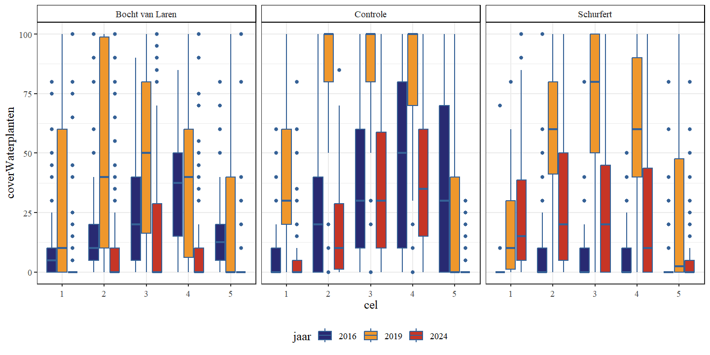
Figuur 4.20: Boxplots van het percentage bedekking waterplanten per cel. Een onderscheid wordt gemaakt tussen de secties en jaren.
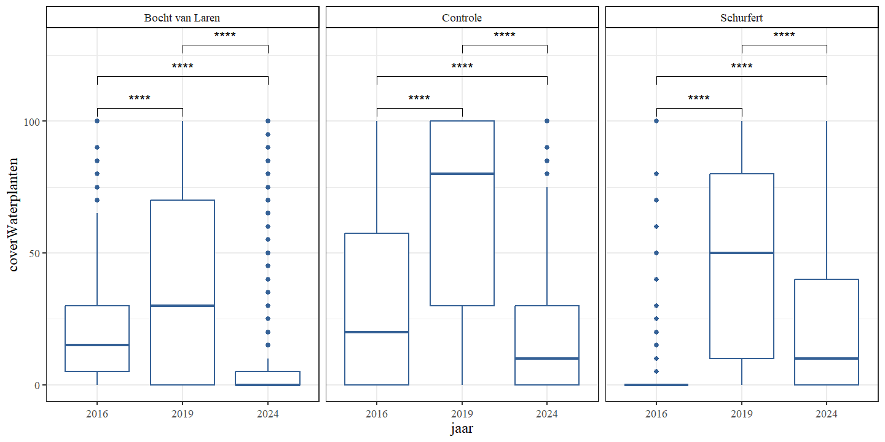
Figuur 4.21: Boxplots van het percentage bedekking waterplanten per jaar. Een onderscheid wordt gemaakt tussen de secties.
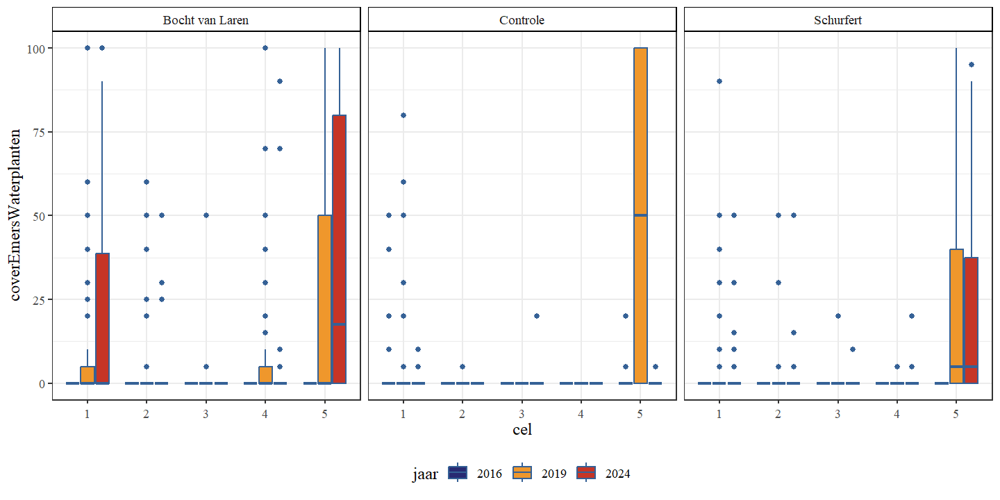
Figuur 4.22: Boxplots van het percentage bedekking emerse waterplanten per cel. Een onderscheid wordt gemaakt tussen de secties en jaren.
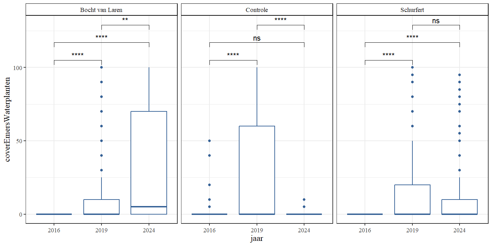
Figuur 4.23: Boxplots van het percentage bedekking emerse waterplanten per jaar. Een onderscheid wordt gemaakt tussen de secties.
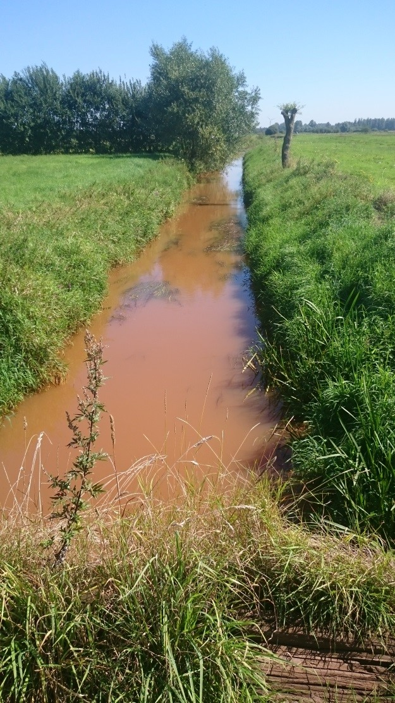
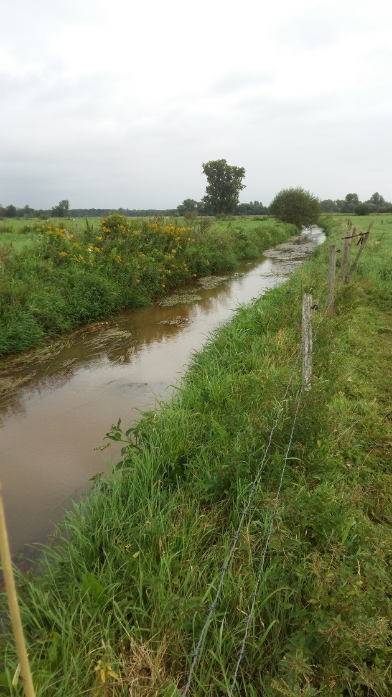
Figuur 4.24: Vergelijking van waterplantenbedekking van traject 1 en 6 in 2016 in de controle-sectie (Foto’s David Buysse).
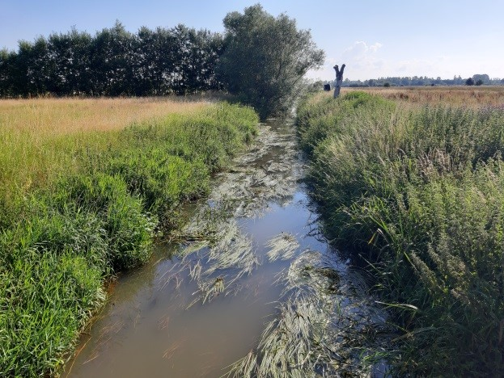
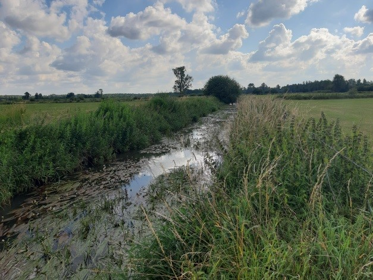
Figuur 4.25: Vergelijking van waterplantenbedekking van traject 1 en 6 in 2019 in de controle-sectie (Foto’s David Buysse).
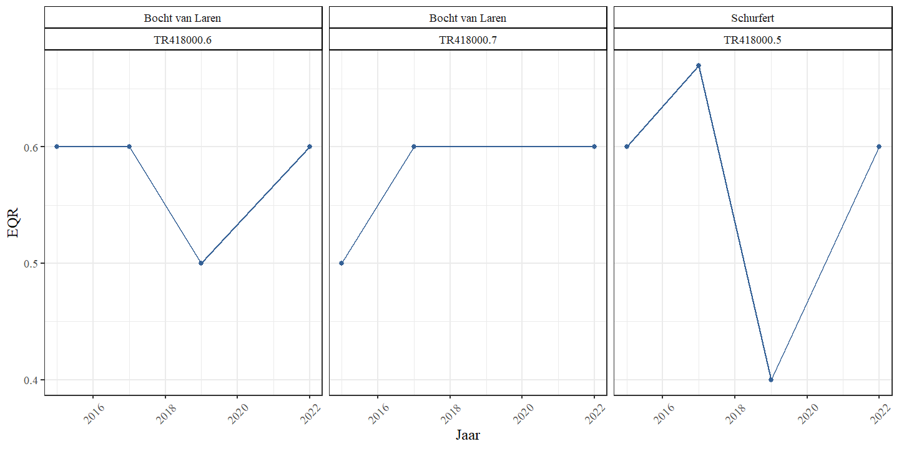
Figuur 4.26: EQR (Ecological Quality Ratio) van de waterplanten in functie van het bemonsteringsjaar voor de verschillende locaties binnen de bestudeerde secties.
4.2.2 Macro-invertebraten
De data voor macro-invertebraten waren beperkt tot traject 6 van Schurfert (meetpunt 418900) en trajecten 2 (meetpunt 419400) en 3 (meetpunt 419450) van Bocht van Laren. Er was geen data beschikbaar voor het controletraject waardoor een vergelijking tussen controletraject en heringerichte trajecten niet mogelijk was.
De MMIF daalde in het tweede traject van de Bocht Van Laren doorheen de tijd van 0.7 naar 0.5 maar voor het derde traject van de Bocht van Laren en het zesde traject van Schurfert bleef de MMIF gelijkaardig (Fig. 4.27). Er was geen significant verschil in gemeenschapsstructuur tussen de verschillende meetjaren en meetplaatsen.
Wanneer de andere beschikbare meetpunten van de Zwarte Beek (ook buiten de bestudeerde secties) worden meegenomen in de analyse observeren we eveneens geen eenduidige trend in de MMIF doorheen de tijd (Fig. 4.28) en ook niet doorheen de ruimte (Fig. 4.29). De MMIF wordt dus niet slechter of beter, verder in de tijd of verder stroomopwaarts.
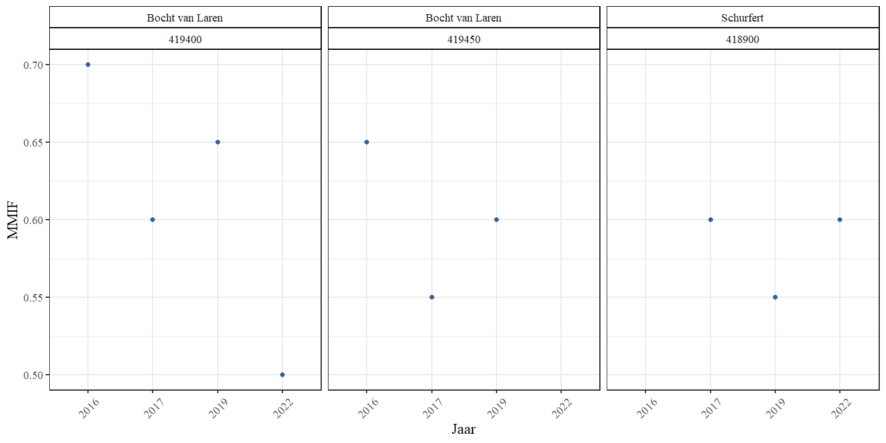
Figuur 4.27: MMIF in functie van het bemonsteringsjaar voor de verschillende locaties binnen de bestudeerde secties.
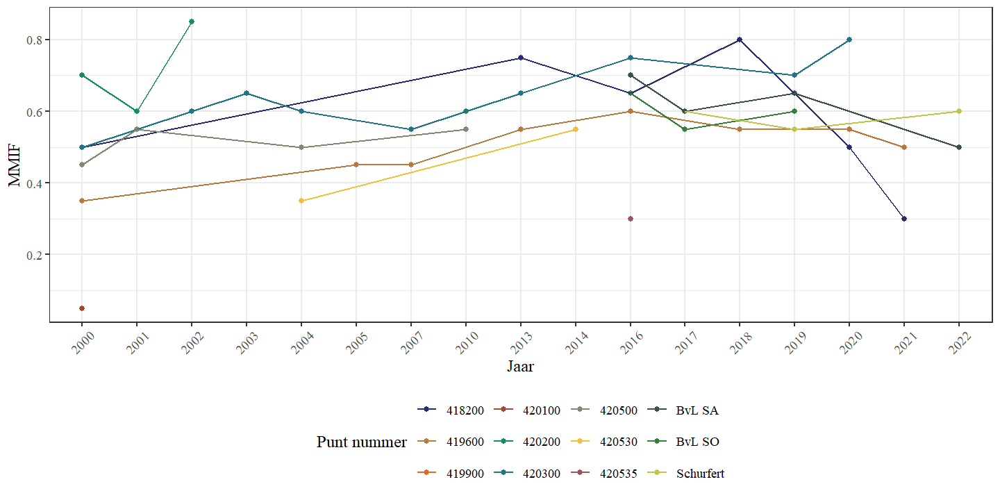
Figuur 4.28: MMIF in functie van het bemonsteringsjaar voor de verschillende locaties in de Zwarte Beek.
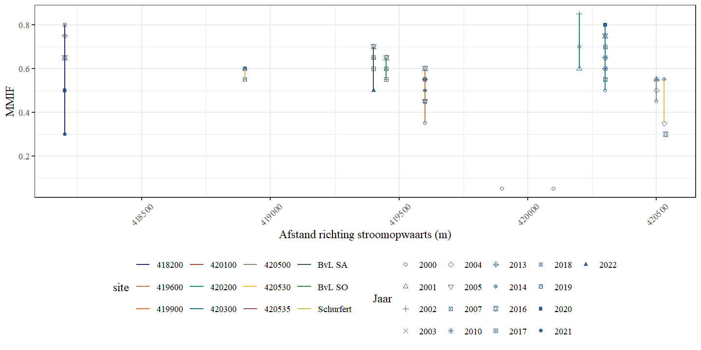
Figuur 4.29: MMIF in functie van de afstand in stroomopwaartse richting voor de verschillende locaties in de Zwarte Beek.
4.2.3 Visgemeenschap
4.2.3.1 Soortensamenstelling na rivierherstelmaatregelen en sanering knelpunten
Over alle deelgebieden en onderzoeksjaren werden tijdens de bevissingen van de Zwarte Beek 24 verschillende vissoorten gevangen (Tabel 4.4, A.1, A.3 en A.5). Zowel in 2016 als in 2019 werden er 16 soorten gevangen, terwijl er in 2024 22 soorten werden gevangen. Baars werd enkel in 2016 gevangen, terwijl alver, kolblei, kwabaal, Europese meerval, serpeling, spiegelkarper en winde enkel in 2024 werden gevangen. Bruine Amerikaanse dwergmeerval werd in 2016 en 2019 gevangen maar niet in 2024. Bittervoorn werd in 2019 en 2024 gevangen maar niet in 2016. In 2016 en 2019 waren riviergrondel en bermpje de meest gevangen soorten, maar in 2024 waren dit riviergrondel en Amerikaanse hondsvis (Fig. 4.30). Op vlak van gewicht waren de twee meest dominante soorten in 2016 en 2019 riviergrondel en paling, terwijl dit in 2024 riviergrondel en kopvoorn waren. In 2016, 2019 en 2024 werden er respectievelijk 6745, 3434 en 4352 individuen gevangen terwijl het totaal gewicht in 2016, 2019 en 2024 respectievelijk 44.2, 21.5, en 58.6 kg betrof. Het hoogste aantal individuen werd dus gevangen in 2016 maar het grootste totaal gewicht werd gevangen in 2024. Wanneer gekeken wordt naar ingeschatte populatiegrootte in plaats van aantal gevangen individuen zien we hoe de grootste populatiegrootte wordt gevonden in 2019. Dit is het gevolg van de bijzonder hoge inschatting van driedoornige stekelbaars ter hoogte van de Gestelse molen (Tabel A.5). Het totaal gewicht op basis van deze ingeschatte populatiegrootte wijkt minder af van het totaal gewicht van de gevangen individuen in vergelijking met de aantallen. Dit is voornamelijk het gevolg van de kenmerken van de gekozen depletiemethode: De depletiemethode is afhankelijk van het totaal aantal gevangen individuen en de opeenvolging van vangsten (en hoe deze verschillen in magnitude). Dit betekent dat voor kleine aantallen de populatieinschatting weinig tot niet zal afwijken van het totale aantal individuen. Doordat de zwaardere vissen typisch in lagere aantallen voorkomen (zoals bijvoorbeeld kopvoorn), zal de populatie-inschatting niet veel verschillen van het aantal gevangen vissen waardoor ook het totale gewicht (dat sterk afhankelijk is van enkele zware vissen) op basis van de populatie-inschatting maar beperkt zal verschillen van het totaal gewicht op basis van het aantal gevangen individuen.
De aangetroffen rheofiele (of stroomminnende) soorten waren bermpje, riviergrondel, kopvoorn, serpeling, vetje, kwabaal en winde. Bermpje daalt sterk in aantal van 2016 naar 2024 maar kopvoorn, serpeling, vetje, kwabaal en winde lijken dan weer sterk toe te nemen in dezelfde periode (Fig. 4.31 en Fig. 4.32). Aantallen van riviergrondel zijn in 2024 maar iets lager dan in 2016.
De visgemeenschap bezit vier niet-inheemse soorten: Amerikaanse hondsvis, blauwbandgrondel, bruine Amerikaanse dwergmeerval en zonnebaars (Fig. 4.33). Hun aantallen lagen veel lager in 2019 dan in 2016, maar in 2024 observeren we een sterke stijging van Amerikaanse hondsvis (tot ver voorbij de aantallen van 2016) en zonnebaars (maar wel nog ver onder de aantallen van 2016).
| soort | 2016 | 2019 | 2024 | 2016 | 2019 | 2024 | 2016 | 2019 | 2024 | 2016 | 2019 | 2024 |
|---|---|---|---|---|---|---|---|---|---|---|---|---|
| alver | 0 | 0 | 4 | 0 | 0 | 16 | 0 | 0 | 4 | 0 | 0 | 16 |
| amerikaanse hondsvis | 48 | 3 | 578 | 99 | 21 | 2425 | 91 | 3 | 1456 | 169 | 21 | 5553 |
| baars | 46 | 0 | 0 | 542 | 0 | 0 | 48 | 0 | 0 | 572 | 0 | 0 |
| bermpje | 2040 | 1004 | 483 | 5521 | 2187 | 1233 | 2623 | 1550 | 650 | 7046 | 3351 | 1632 |
| bittervoorn | 0 | 10 | 7 | 0 | 22 | 16 | 0 | 11 | 7 | 0 | 24 | 16 |
| blankvoorn | 384 | 25 | 88 | 742 | 157 | 3271 | 403 | 40 | 89 | 775 | 179 | 3307 |
| blauwbandgrondel | 593 | 220 | 220 | 833 | 359 | 413 | 679 | 276 | 237 | 926 | 449 | 446 |
| bruine amerikaanse dwergmeerval | 10 | 2 | 0 | 356 | 336 | 0 | 10 | 2 | 0 | 356 | 336 | 0 |
| driedoornige stekelbaars | 150 | 600 | 226 | 94 | 231 | 118 | 178 | 5255 | 766 | 105 | 1889 | 384 |
| giebel | 233 | 44 | 6 | 5108 | 2306 | 124 | 235 | 46 | 6 | 5126 | 2429 | 124 |
| kolblei | 0 | 0 | 1 | 0 | 0 | 22 | 0 | 0 | 1 | 0 | 0 | 22 |
| kopvoorn | 10 | 41 | 145 | 420 | 3173 | 13746 | 10 | 42 | 145 | 420 | 3250 | 13746 |
| kwabaal | 0 | 0 | 10 | 0 | 0 | 2257 | 0 | 0 | 10 | 0 | 0 | 2257 |
| meerval | 0 | 0 | 1 | 0 | 0 | 90 | 0 | 0 | 1 | 0 | 0 | 90 |
| paling | 40 | 17 | 21 | 11842 | 4982 | 7088 | 40 | 17 | 22 | 11842 | 4982 | 7530 |
| rietvoorn | 5 | 12 | 19 | 16 | 193 | 403 | 5 | 12 | 19 | 16 | 193 | 403 |
| riviergrondel | 2709 | 1397 | 2437 | 14812 | 7372 | 19756 | 3612 | 2368 | 3046 | 19097 | 11778 | 25103 |
| serpeling | 0 | 0 | 2 | 0 | 0 | 112 | 0 | 0 | 2 | 0 | 0 | 112 |
| snoek | 8 | 2 | 33 | 1773 | 56 | 4878 | 8 | 2 | 33 | 1773 | 56 | 4878 |
| spiegelkarper | 0 | 0 | 1 | 0 | 0 | 1665 | 0 | 0 | 1 | 0 | 0 | 1665 |
| tiendoornige stekelbaars | 69 | 40 | 12 | 40 | 18 | 5 | 70 | 80 | 13 | 40 | 35 | 5 |
| vetje | 2 | 11 | 11 | 3 | 13 | 11 | 2 | 11 | 11 | 3 | 13 | 11 |
| winde | 0 | 0 | 2 | 0 | 0 | 344 | 0 | 0 | 2 | 0 | 0 | 344 |
| zonnebaars | 398 | 6 | 45 | 2026 | 108 | 570 | 424 | 6 | 45 | 2134 | 108 | 570 |
| totaal | 6745 | 3434 | 4352 | 44227 | 21534 | 58563 | 8438 | 9721 | 6566 | 50400 | 29093 | 68214 |
| soort | 2016 | 2019 | 2024 | 2016 | 2019 | 2024 | 2016 | 2019 | 2024 | 2016 | 2019 | 2024 | 2016 | 2019 | 2024 |
|---|---|---|---|---|---|---|---|---|---|---|---|---|---|---|---|
| alver | 0 | 0 | 0 | 0 | 0 | 0 | 0 | 0 | 3 | 0 | 0 | 0 | 0 | 0 | 1 |
| amerikaanse hondsvis | 0 | 0 | 4 | 0 | 2 | 7 | 0 | 0 | 75 | 1 | 1 | 979 | 90 | 0 | 391 |
| baars | 0 | 0 | 0 | 0 | 0 | 0 | 16 | 0 | 0 | 13 | 0 | 0 | 19 | 0 | 0 |
| bermpje | 339 | 464 | 241 | 615 | 118 | 129 | 221 | 619 | 195 | 65 | 248 | 63 | 1383 | 101 | 22 |
| bittervoorn | 0 | 6 | 4 | 0 | 4 | 0 | 0 | 0 | 1 | 0 | 0 | 0 | 0 | 1 | 2 |
| blankvoorn | 0 | 38 | 11 | 0 | 1 | 4 | 217 | 0 | 27 | 91 | 0 | 20 | 95 | 1 | 27 |
| blauwbandgrondel | 2 | 35 | 70 | 209 | 69 | 103 | 182 | 46 | 42 | 26 | 58 | 6 | 260 | 68 | 16 |
| bruine amerikaanse dwergmeerval | 1 | 0 | 0 | 8 | 0 | 0 | 1 | 0 | 0 | 0 | 0 | 0 | 0 | 2 | 0 |
| driedoornige stekelbaars | 52 | 2027 | 739 | 107 | 3203 | 25 | 16 | 20 | 2 | 2 | 3 | 0 | 1 | 2 | 0 |
| giebel | 1 | 0 | 6 | 125 | 14 | 0 | 39 | 4 | 0 | 23 | 3 | 0 | 47 | 25 | 0 |
| kolblei | 0 | 0 | 0 | 0 | 0 | 0 | 0 | 0 | 0 | 0 | 0 | 0 | 0 | 0 | 1 |
| kopvoorn | 0 | 6 | 64 | 0 | 7 | 33 | 9 | 4 | 25 | 0 | 14 | 9 | 1 | 11 | 14 |
| kwabaal | 0 | 0 | 1 | 0 | 0 | 4 | 0 | 0 | 4 | 0 | 0 | 0 | 0 | 0 | 1 |
| meerval | 0 | 0 | 0 | 0 | 0 | 0 | 0 | 0 | 1 | 0 | 0 | 0 | 0 | 0 | 0 |
| paling | 0 | 0 | 5 | 7 | 0 | 5 | 17 | 5 | 2 | 6 | 5 | 6 | 10 | 7 | 4 |
| rietvoorn | 0 | 0 | 5 | 0 | 0 | 1 | 2 | 0 | 3 | 2 | 3 | 4 | 1 | 9 | 6 |
| riviergrondel | 18 | 230 | 1067 | 601 | 205 | 443 | 937 | 1060 | 682 | 280 | 296 | 427 | 1776 | 577 | 427 |
| serpeling | 0 | 0 | 1 | 0 | 0 | 0 | 0 | 0 | 1 | 0 | 0 | 0 | 0 | 0 | 0 |
| snoek | 0 | 0 | 1 | 0 | 0 | 5 | 6 | 0 | 5 | 2 | 1 | 11 | 0 | 1 | 11 |
| spiegelkarper | 0 | 0 | 0 | 0 | 0 | 0 | 0 | 0 | 0 | 0 | 0 | 1 | 0 | 0 | 0 |
| tiendoornige stekelbaars | 14 | 35 | 1 | 28 | 44 | 2 | 0 | 1 | 3 | 2 | 0 | 7 | 26 | 0 | 0 |
| vetje | 0 | 2 | 0 | 2 | 0 | 3 | 0 | 0 | 4 | 0 | 6 | 0 | 0 | 3 | 4 |
| winde | 0 | 0 | 0 | 0 | 0 | 0 | 0 | 0 | 1 | 0 | 0 | 0 | 0 | 0 | 1 |
| zonnebaars | 1 | 0 | 8 | 136 | 2 | 10 | 237 | 2 | 17 | 7 | 1 | 6 | 43 | 1 | 4 |
| totaal | 428 | 2843 | 2228 | 1838 | 3669 | 774 | 1900 | 1761 | 1093 | 520 | 639 | 1539 | 3752 | 809 | 932 |
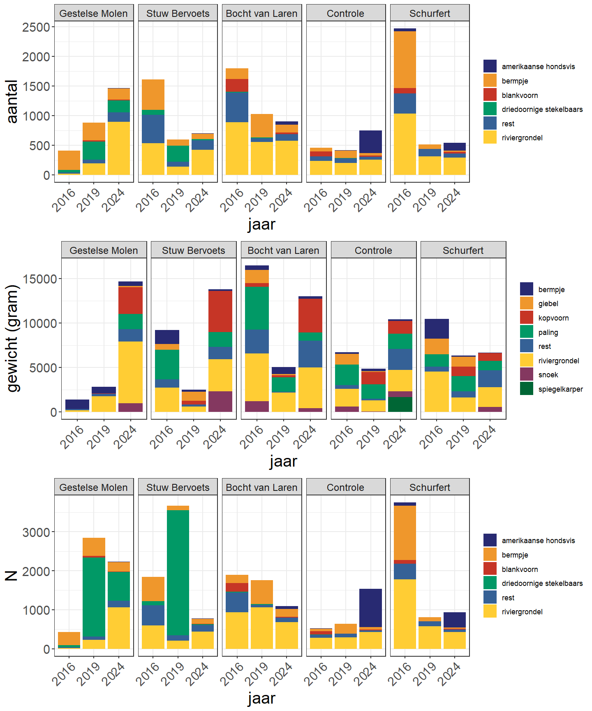
Figuur 4.30: Verdeling van de aantallen, biomassa en geschatte populatiegrootte (N) per vissoort in de verschillende secties voor de verschillende jaren (rest = overige vissoorten).
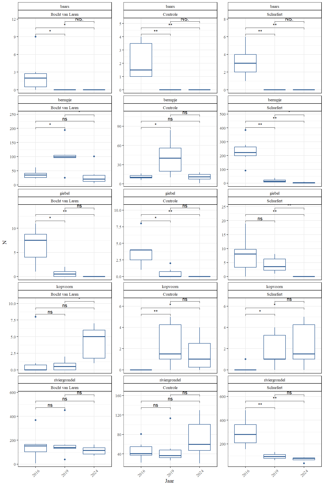
Figuur 4.31: Boxplots van de geschatte populatiegrootte voor een aantal rheofiele soorten per sectie en jaar.
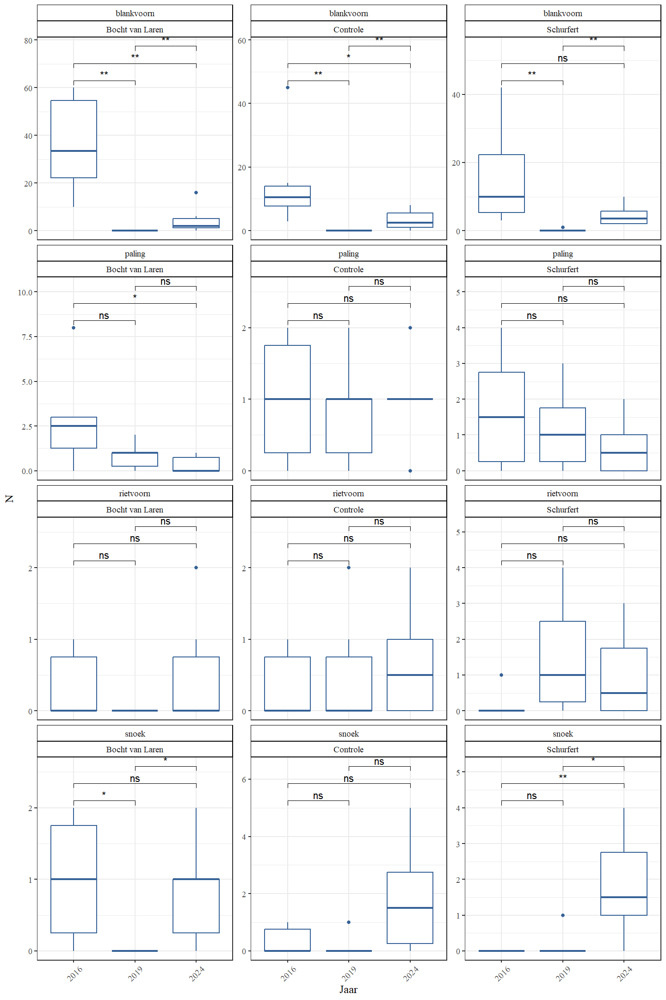
Figuur 4.32: Boxplots van de geschatte populatiegrootte voor een aantal rheolimnofiele soorten per sectie en jaar.
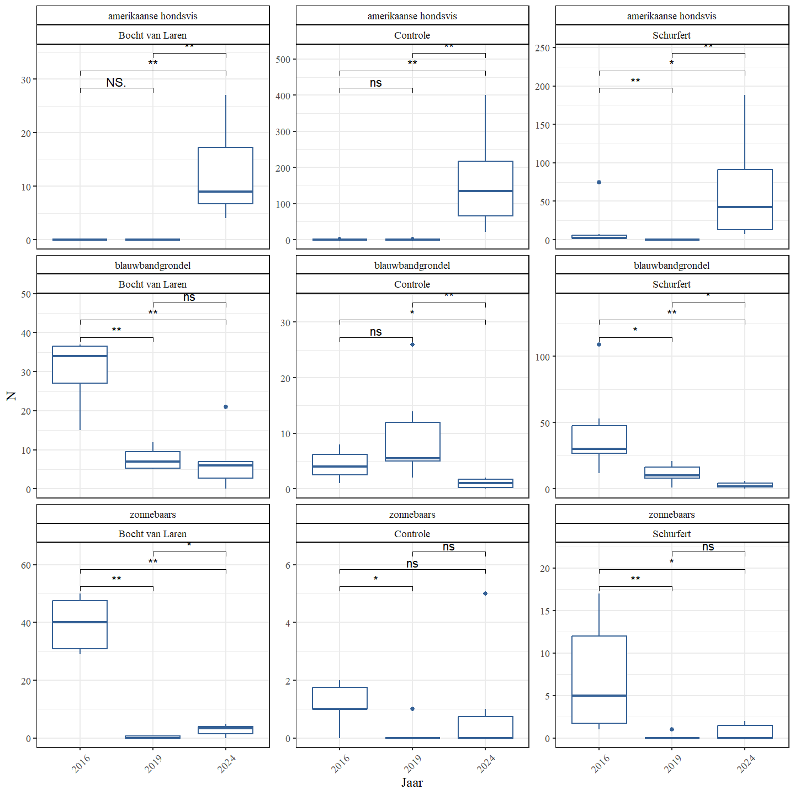
Figuur 4.33: Boxplots van de geschatte populatiegrootte voor een aantal exoten per sectie en jaar.
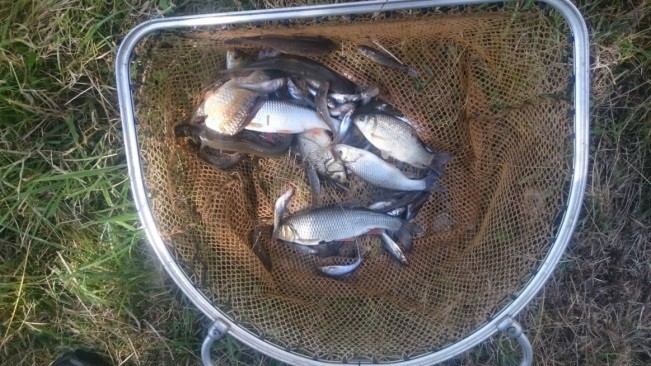
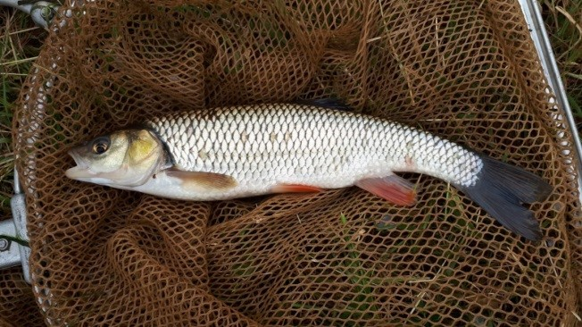
Figuur 4.34: Kopvoorn, riviergrondel, giebel en paling gevangen in de Zwarte Beek (Foto’s Stijn Bruneel).
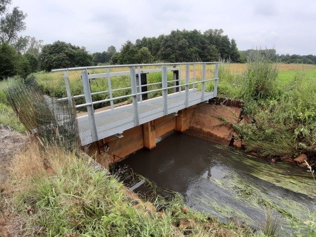
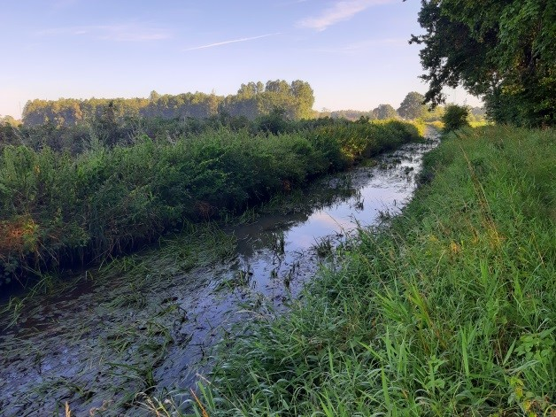
Figuur 4.35: Vrije doorgang onder de vernieuwde hefstuw van Bervoets (links) en vegetatierijk traject nr 3 stroomopwaarts van de Gestelse molen (rechts) (Foto’s David Buysse).
4.2.3.2 Ecological Quality Ratio (EQR)
Om tot een objectieve beoordeling te komen van het visbestand binnen de Kaderrichtlijn Water (KRW) werd ervoor gekozen om de brasem-index te bepalen (Breine et al., 2021) waarbinnen de meeste locaties lijken te vallen. De Huetzonering die hiervoor werd geraadpleegd werkte immers met de rechtgetrokken riviersecties (Schneiders, 2009). Door de hermeandering is de gemiddelde helling van deze riviersecties hoogstwaarschijnlijk gedaald waardoor die enkele secties die als barbeelzone geïdentificeerd werden nu eerder brasemzones zullen zijn nu. De nieuwe brabeel-index, die gebruik maakt van de helling in haar berekening, werd niet gebruikt doordat de helling in deze relatief nieuwe riviersecties niet voorhanden was. Een paired Wilcoxon rank sum test toont aan dat de EQR in de Zwarte Beek het grootst was in 2024 (p<0.05), gevolgd door 2016 (p<0.05) en 2019 (p<0.05).
In zowel de Bocht van Laren, Schurfert en Stuw Bervoets observeren we voornamelijk een daling van de index van 2016 naar 2019 en een stijging van de index van 2019 naar 2024 (Fig. 4.36). In de Controle zien we een eerder constant verloop van 2016 naar 2019 en een stijging van 2019 naar 2024. Voor de Gestelse molen zien we een stijging van 2016 naar 2024. Deze verschillen binnen secties zijn echter niet significant.
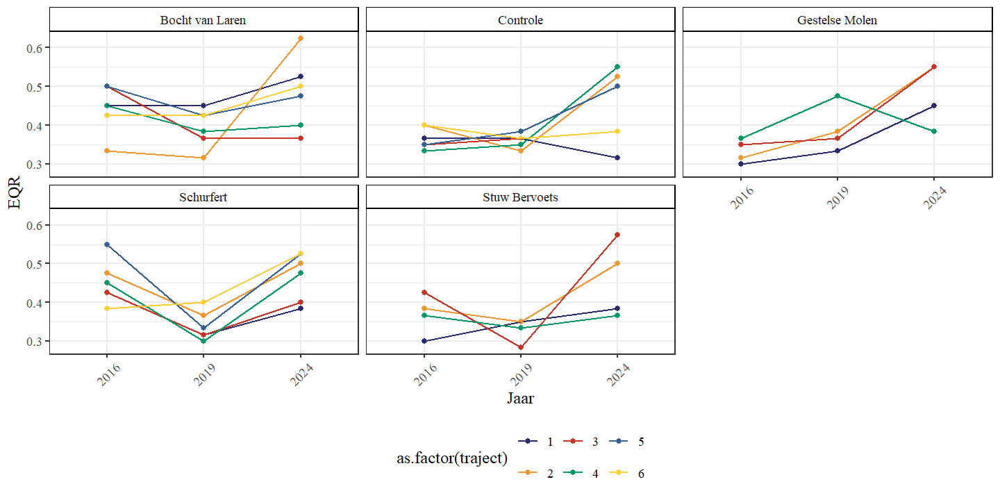
Figuur 4.36: EQR (Ecological Quality Ratio) van de visgemeenschap in functie van jaar per sectie.
| sectie | 2016 | 2019 | 2024 |
|---|---|---|---|
| Bocht van Laren | 0.45 | 0.40 | 0.49 |
| Controle | 0.36 | 0.37 | 0.44 |
| Gestelse Molen | 0.33 | 0.38 | 0.50 |
| Schurfert | 0.44 | 0.32 | 0.49 |
| Stuw Bervoets | 0.38 | 0.34 | 0.44 |
4.2.3.3 Lengteverdeling
De trend in lengteverdeling van kopvoorn doorheen de tijd is moeilijk te evalueren door het relatief lage aantal in 2016 (zowel Schurfert als Bocht van Laren) en 2019 (enkel Bocht van Laren). In de Bocht van Laren werden er verder in 2024 zowel meer heel grote en heel kleine vissen gevangen (Fig. 4.37 en 4.38). In Schurfert lag de gemiddelde lengte van kopvoorn significant lager in 2024 dan in 2019 (in 2024 lag de lengte ook lager dan 2016, maar in 2016 waren er te weinig vissen om onderbouwde besluiten te trekken). Opnieuw zien we bovendien in Schurfert, net als in de Bocht van Laren maar nu met meer statistische zekerheid, meer heel kleine en meer heel grote vissen (Fig. 4.39 en 4.40). Dit betekent dat de range van de lengteverdeling veel breder is geworden. Dit wijst op een gezondere populatie die beter in staat is zichzelf in stand te houden. Blankvoorn waren in 2016 zelden groter dan 75 mm, maar in 2024 werden geen blankvoorns gevangen die kleiner waren dan 75 mm.
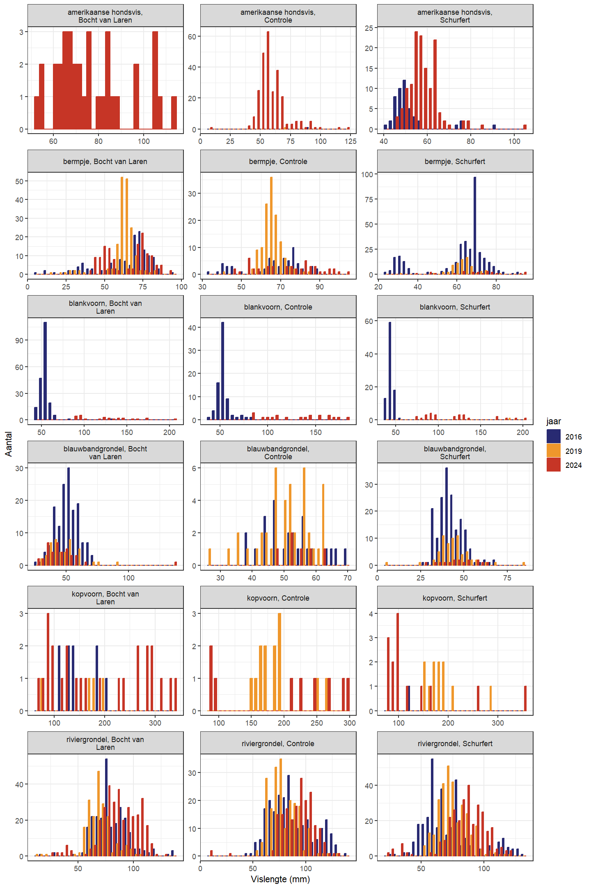
Figuur 4.37: Lengteverdeling voor de verschillende gevangen soorten
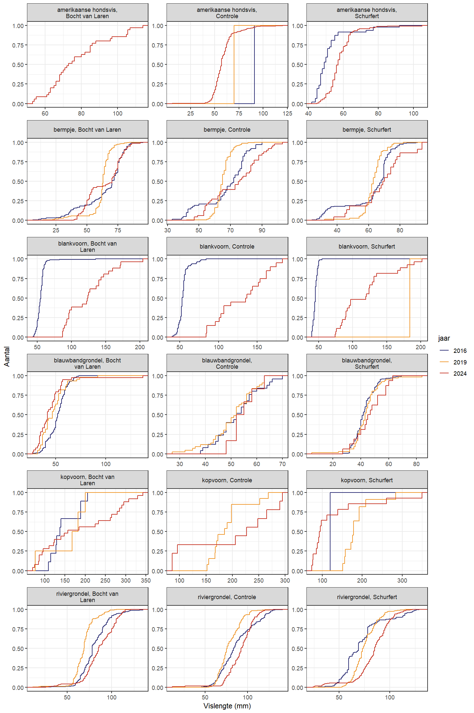
Figuur 4.38: Cumulatieve lengteverdeling voor de verschillende gevangen soorten
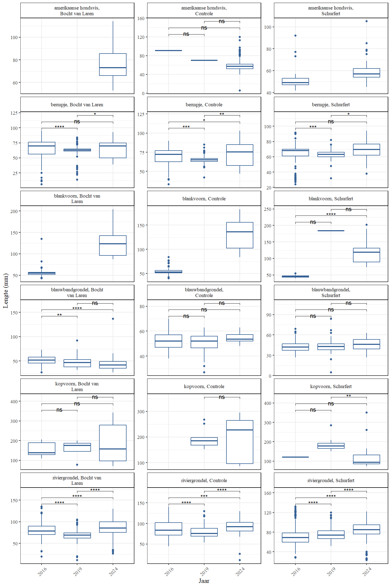
Figuur 4.39: Boxplots die de gemiddelde lengte voorstellen in functie van het jaar. Gepaarde wilcoxon ranks sum testen met Bonferroni correctie werden gebruikt. p-waarden werden geclassificeerd als niet-significant of ns ($>$0.05), * (0.05-0.01), ** (0.01-0.001), *** (0.001-0.0001), **** (0.0001-0).
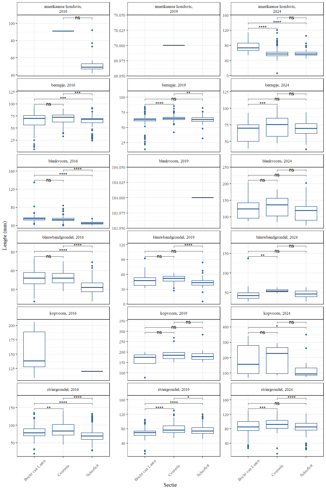
Figuur 4.40: Boxplots die de gemiddelde lengte voorstellen in functie van de sectie Gepaarde wilcoxon ranks sum testen met Bonferroni correctie werden gebruikt. p-waarden werden geclassificeerd als niet-significant of ns ($>$0.05), * (0.05-0.01), ** (0.01-0.001), *** (0.001-0.0001), **** (0.0001-0).
4.2.3.4 Diversiteit
Het totaal aantal soorten in de meanderende secties steeg van 2016 naar 2024 terwijl het totaal aantal soorten in de controlesectie nagenoeg constant bleef (Tabel 4.9, 4.10 en 4.11). Ook ter hoogte van de stuw en Gestelse molen werd een toename van het totaal aantal soorten waargenomen. De Shannon diversiteit, die ook de relatieve verdeling in rekening brengt, geeft echter een ander beeld wanneer deze berekend wordt voor de geobserveerde aantallen en de ingeschatte populatiegrootte. Voor Schurfert blijft de Shannon-diversiteit nagenoeg constant, maar voor de Bocht van Laren observeren we een significant lagere Shannon-diversiteit in 2024 dan in 2016 voor beide gevallen (Tabel 4.12 en Fig 4.41). Wanneer de Shannon-diversiteit wordt berekend aan de hand van het gewicht van de gevangen vissen, observeren we echter een lichte stijging in Schurfert en een lichte, niet significante daling in de Bocht van Laren. Dit suggereert dat doorheen de tijd de biomassa beter verdeeld werd over de verschillende soorten dan het aantal individuen.
| sectie | 2016 | 2019 | 2024 |
|---|---|---|---|
| Gestelse Molen | 8 | 9 | 16 |
| Stuw Bervoets | 10 | 11 | 14 |
| Bocht van Laren | 13 | 9 | 19 |
| Controle | 13 | 12 | 12 |
| Schurfert | 13 | 14 | 16 |
| jaar | soortenaantal |
|---|---|
| 2016 | 16 |
| 2019 | 16 |
| 2024 | 22 |
| sectie | soortenaantal |
|---|---|
| Gestelse Molen | 18 |
| Stuw Bervoets | 17 |
| Bocht van Laren | 22 |
| Controle | 16 |
| Schurfert | 21 |
| sectie | 2016 | 2019 | 2024 | 2016 | 2019 | 2024 | 2016 | 2019 | 2024 |
|---|---|---|---|---|---|---|---|---|---|
| Gestelse Molen | 0.61 | 0.84 | 0.74 | 0.60 | 0.66 | 0.65 | 0.63 | 0.64 | 0.91 |
| Stuw Bervoets | 1.03 | 0.80 | 0.78 | 1.01 | 0.67 | 0.75 | 0.92 | 0.80 | 1.02 |
| Bocht van Laren | 1.53 | 1.00 | 1.20 | 1.52 | 0.89 | 1.16 | 1.72 | 1.10 | 1.50 |
| Controle | 1.49 | 1.23 | 1.20 | 1.44 | 1.12 | 0.99 | 1.26 | 1.24 | 1.31 |
| Schurfert | 1.31 | 1.24 | 1.34 | 1.18 | 0.97 | 1.12 | 1.32 | 1.31 | 1.44 |
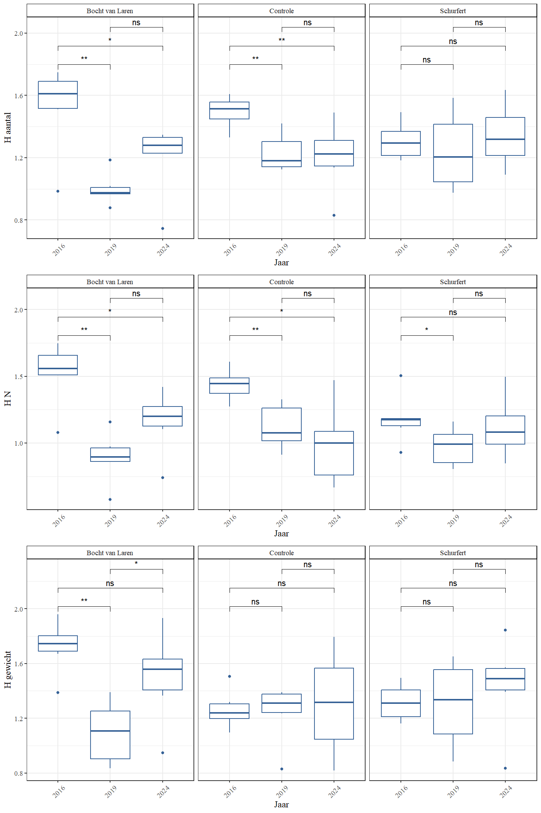
Figuur 4.41: Shannon diversiteit op basis van aantallen, ingeschatte populatiegrootte en gewicht voor de verschillende secties en jaren.
4.2.3.5 Gemeenschapsstructuur
Op vlak van geobserveerde aantallen en populatiegrootte domineert Amerikaanse hondsvis de structuur van de visgemeenschap in 2024 tov de andere jaren (Fig. 4.42). Aantallen van blankvoorn, baars, zonnebaars, giebel en blauwbandgrondel zijn bepalend voor de structuur van 2016. Wanneer echter wordt gekeken naar de biomassa blijken kopvoorn, Amerikaanse hondsvis en snoek bepalend voor de structuur van 2024. Giebel, baars en zonnebaars domineren in 2016 in termen van biomassa.
De variabiliteit van de gemeenschapsstructuur kan opgedeeld worden in ruimtelijke en temporele variabiliteit (Tabel 4.14). Voor de gemeenschapsstructuur op basis van geobserveerde aantallen en ingeschatte populatiegrootte wordt de variabiliteit voornamelijk verklaard door de drie monitoringsjaren (30%), gevolgd door de bemonsterde vijf secties (21%), de interactie tussen de jaren en de secties (18%) en tenslotte de trajecten binnen de secties (4%). 27% van de variabiliteit blijft onverklaard. Voor de gemeenschapsstructuur op basis van biomassa wordt de variabiliteit eveneens voornamelijk verklaard door de drie monitoringsjaren (30%), maar hier blijkt de interactie tussen de jaren en de secties (18%) belangrijker dan de secties zelf (16%). Dit suggereert dat voor de gemeenschapsstructuur de secties tijdens een bepaald jaar op vlak van biomassa meer van elkaar verschillen dan op vlak van aantallen. De trajecten binnen de secties verklaren opnieuw slechts 4% van de variabiliteit en 32% blijft onverklaard.
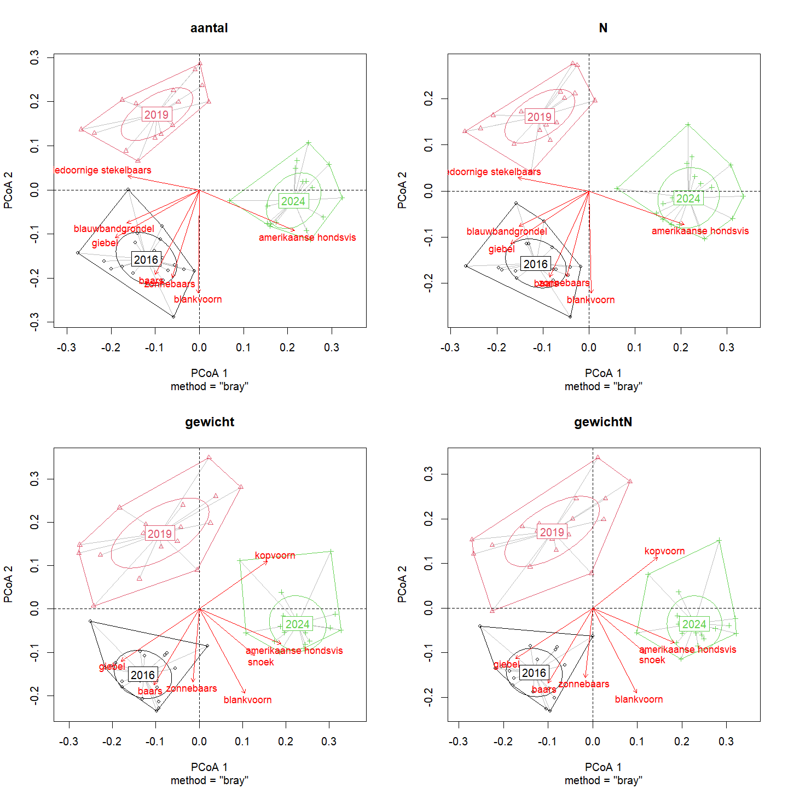
Figuur 4.42: Principale Coördinaten Analyse (PCoA) van de visgemeenschapsstructuur op basis van aantallen, ingeschatte populatiegrootte, gewicht en ingeschat gewicht.
| metric | variabele | Df | SumOfSqs | R2 | F | Pr(>F) |
|---|---|---|---|---|---|---|
| aantal | jaar | 2 | 2.30 | 0.31 | 35.26 | 0.00 |
| sectie | 4 | 1.58 | 0.21 | 12.12 | 0.00 | |
| jaar:sectie | 8 | 1.30 | 0.18 | 4.98 | 0.00 | |
| sectie:traject | 5 | 0.31 | 0.04 | 1.87 | 0.01 | |
| Residual | 58 | 1.89 | 0.26 | |||
| Total | 77 | 7.39 | 1.00 | |||
| N | jaar | 2 | 2.26 | 0.30 | 32.37 | 0.00 |
| sectie | 4 | 1.59 | 0.21 | 11.37 | 0.00 | |
| jaar:sectie | 8 | 1.37 | 0.18 | 4.92 | 0.00 | |
| sectie:traject | 5 | 0.32 | 0.04 | 1.83 | 0.01 | |
| Residual | 58 | 2.02 | 0.27 | |||
| Total | 77 | 7.56 | 1.00 | |||
| gewicht | jaar | 2 | 2.71 | 0.30 | 27.24 | 0.00 |
| sectie | 4 | 1.47 | 0.16 | 7.40 | 0.00 | |
| jaar:sectie | 8 | 1.60 | 0.18 | 4.02 | 0.00 | |
| sectie:traject | 5 | 0.33 | 0.04 | 1.34 | 0.13 | |
| Residual | 58 | 2.88 | 0.32 | |||
| Total | 77 | 8.99 | 1.00 |
4.2.3.6 Bespreking van de abiotiek in relatie tot visgemeenschappen
Wanneer via dbRDA en forward modelselectie wordt getracht om de variabiliteit van de visgemeenschapsstructuur te verklaren aan de hand van de omgevingsvariabelen worden volgende variabelen weerhouden in volgorde van dalend belang: stroomsnelheid, aandeel grazige oever, waterdiepte, aandeel dunne waterplanten, aandeel emerse waterplanten, percentage organisch materiaal, aandeel schaduw en percentage fijne zandsteen. Dit model verklaard 61% van de variabiliteit.
Een variation partitioning laat toe om variabelen onder te verdelen in relevante categorieën en de verdeling van de variabiliteit over die categorieën te bepalen. Daarbij wordt ook bepaald in welke mate er overlap is tussen de categorieën in het aandeel van de verklaarde variabiliteit. De verschillende variabelen werden ingedeeld in ruimte (afstand tussen transecten), tijd (jaren), cover (aandeel waterplanten, oevervegetatie en holle oevers) en hydromorfologie (stroomsnelheid, diepte, substraatsamenstelling en bodemhoogte). Daarbij bleek het aandeel van de variabiliteit dat louter aan de ruimtelijke nabijheid, monitoringsjaar, cover en hydromorfologie kon worden toegekend beperkt was tot respectievelijk 5.7%, 0.3%, 3.5% en 2.2% (Fig. 4.43). Een groter aandeel van de variabiliteit werd toegekend aan de overlap van bepaalde factoren. Doordat de meeste variabelen tot op zeker mate gecorreleerd zijn (bijvoorbeeld habitats van locatie die dichter bij elkaar liggen zullen waarschijnlijk meer gelijkend zijn dan habitats van locaties die ver uit elkaar liggen) is het dikwijls moeilijk te achterhalen welke factor verantwoordelijk is voor het geobserveerde effect. De belangrijkste overlappende factoren zijn ruimte en hydromorfologie (16.4%), cover en hydromorfologie (16.3%) en ruimte en cover (9.0%).
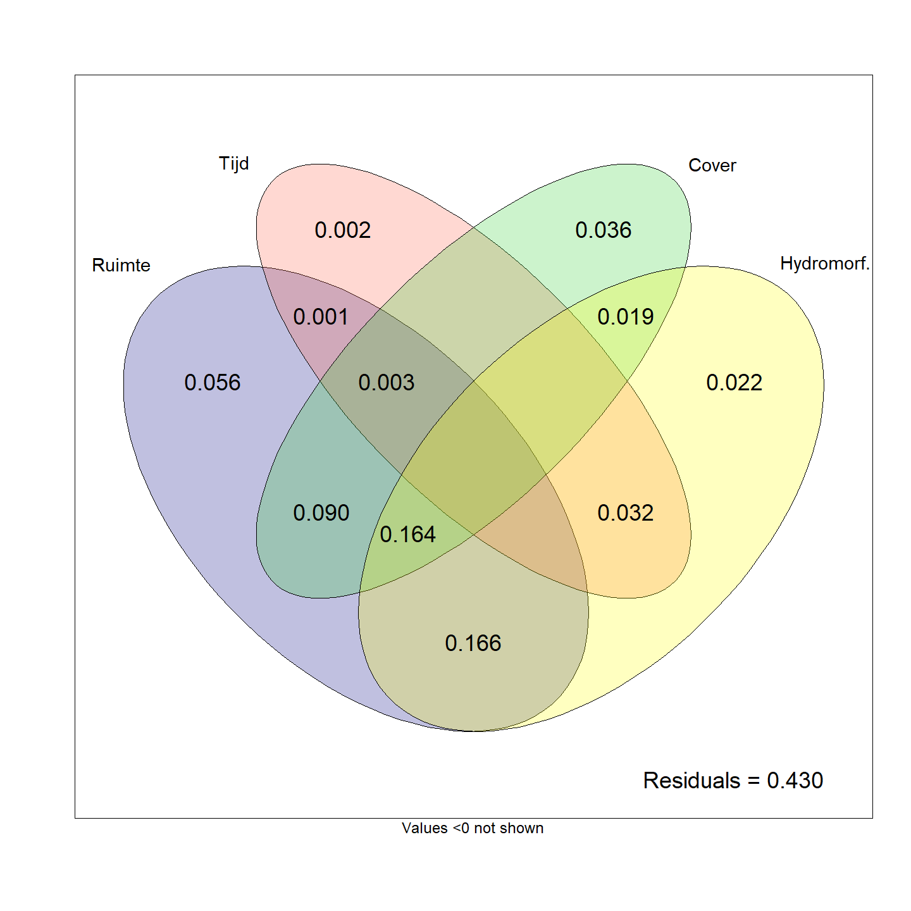
Figuur 4.43: Variation partitioning van de visgemeenschapsstructuur in functie van de verschillende abiotische variabelen.
Referenties
 Bruneel, S., et. al. (2026). 10.21436/inbor.141733221
Bruneel, S., et. al. (2026). 10.21436/inbor.141733221